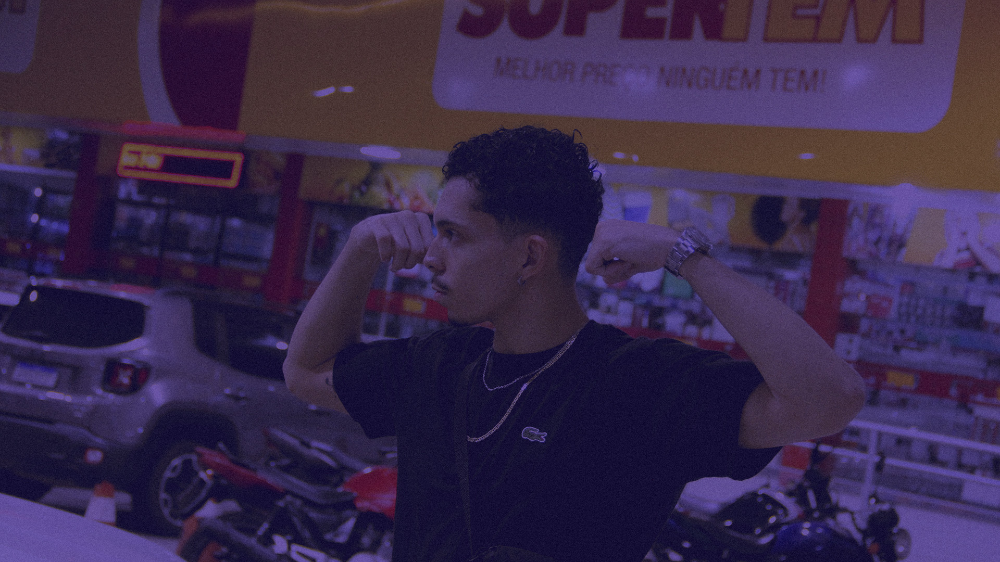
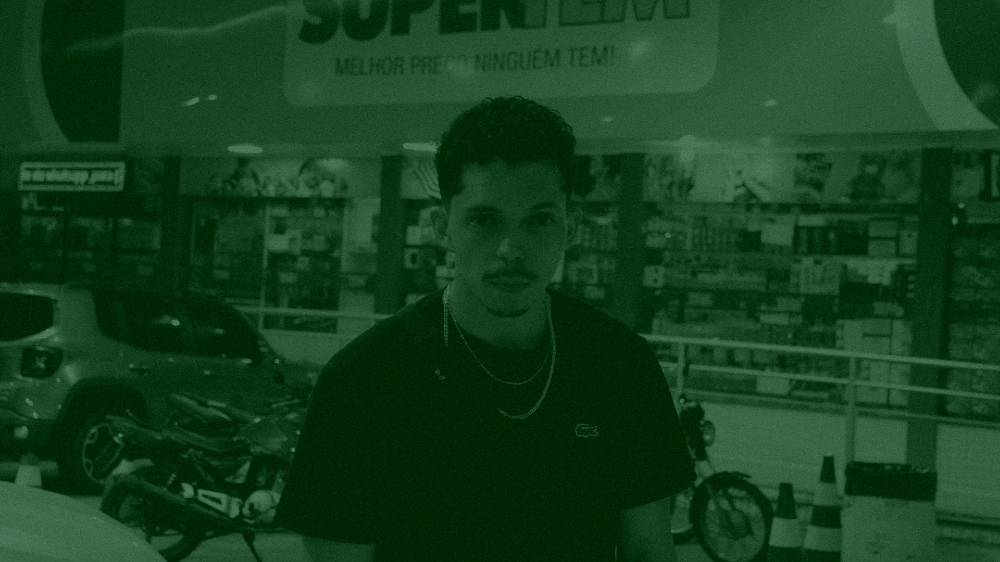
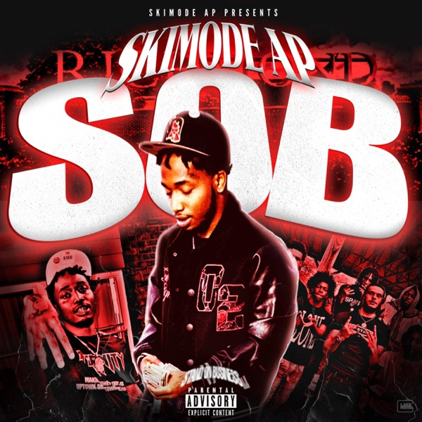
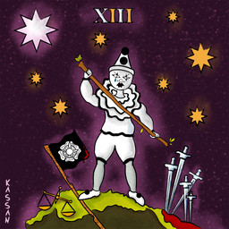
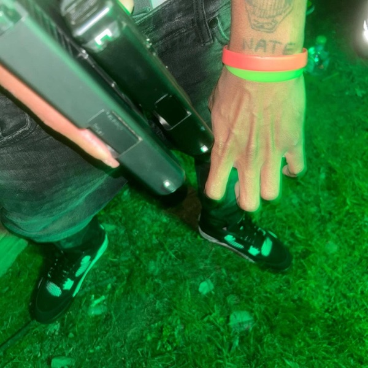
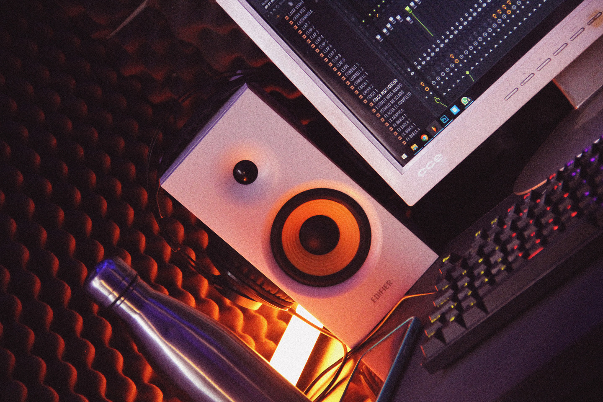
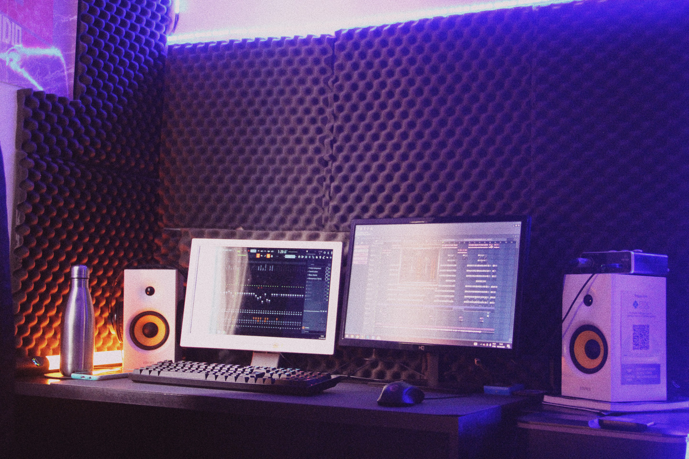
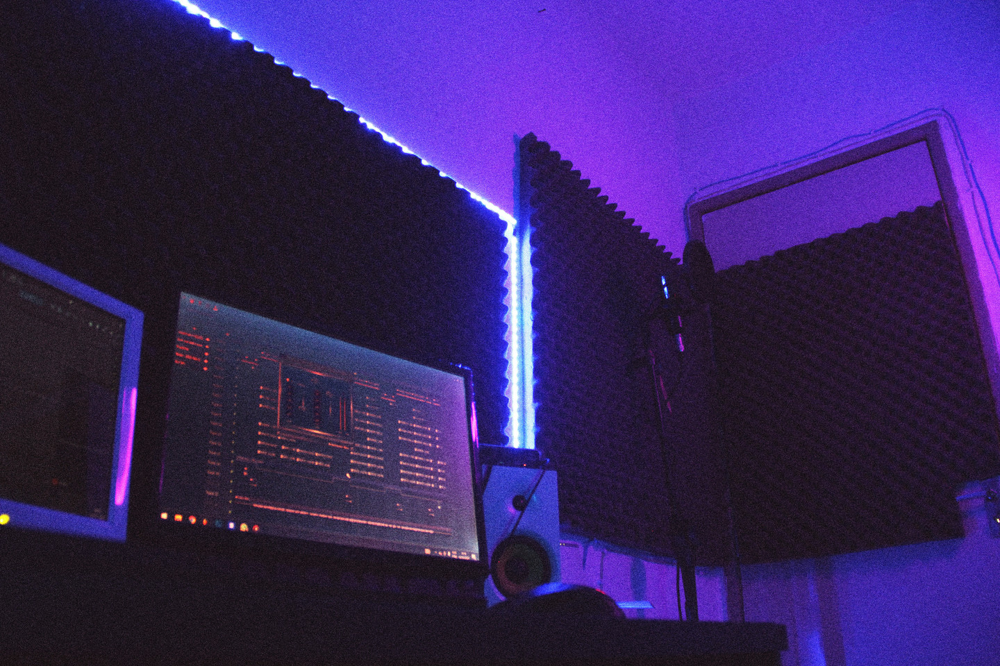
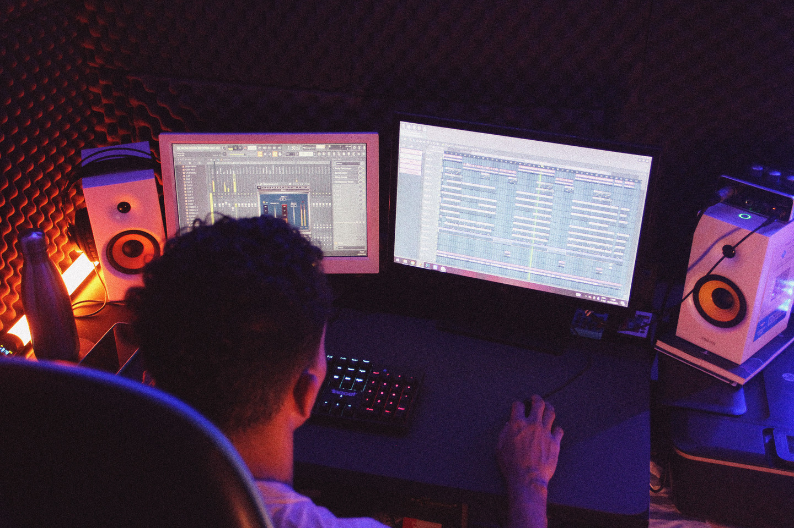

// 003 — PORTFOLIO
TRABALHOS RECENTES
Cold feat. Big Murdda
Trap · 2024

For Reaper's Only EP
EP · 2024

Slip N Slide
Single · 2024

Beatmaker · Mixagem · Masterização · Aracaju · Sergipe · Brasil
Transformo a intenção do artista em arquitetura sonora de elite.
Sou Duck, produtor musical de Aracaju. Desde 2018 transformando ideias em experiências sonoras que conectam. Não faço apenas beats — construo universos.
Meu enfoque combina tecnologia de vanguarda com sensibilidade artística. Cada frequência tem um propósito, cada textura conta uma história.

Criação de beats originais do zero. Trap, Pop, MPB, Funk. Cada beat é uma peça única projetada para sua visão.
EQ dinâmico, compressão paralela, automação de panning. Cada instrumento ocupa exatamente o espaço que merece.
Loudness competitivo para Spotify e todas as plataformas. O toque final que separa o bom do épico.
Transformo ideias simples em produções completas. Arranjo, instrumentação e direção criativa.
Trilhas sonoras, sound design e mixagem para conteúdo audiovisual. Do curta-metragem ao anúncio publicitário.
Sessões de orientação para artistas emergentes. Te ajudo a encontrar seu som e se posicionar no mercado.
Trap · 2024

EP · 2024
Single · 2024

Single · Apple Music

EP · Apple Music

Single · Apple Music
Remix

Single

Single

Single

Single

Track

Track

Track

Track

// 008 — ESTÚDIO
Home Studio · Mix Station · Production · Recording · Mixing · Mastering
Cada estação tem um propósito específico.

O coração da criação. Monitores de referência e tratamento acústico profissional.

Onde a engenharia se torna arte. EQ, compressão, reverberação espacial.

Sintetizadores analógicos e controladores MIDI. O laboratório de sons.

Cabine de gravação com tratamento acústico. Microfones de condensador e dinâmicos.

O refinamento final. Equalização, compressão, efeitos e automação.

O selo de qualidade. Loudness competitivo para todas as plataformas.
Artistas que confiaram no processo.
Cada grande música começa com uma conversa. Me conte sua visão e transformemos em realidade.
Haz clic en los instrumentos para crear. Usa el teclado del ordenador o toca en pantalla.
Crea sonidos unicos
Mantén el ritmo
IA para tus letras
Configuração Neurocognitiva